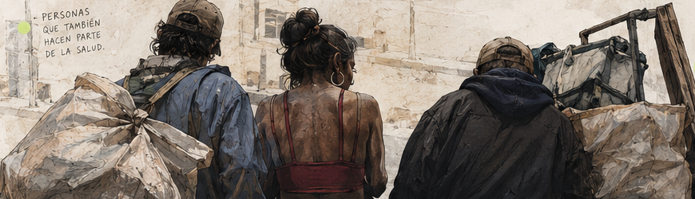

MEDICINA / EPIDEMIOLOGÍA / SALUD PÚBLICA
Sara
Izquierdo.
Soy estudiante de pregrado de Medicina de la FUCS, actualmente interna de XI semestre. Paralelamente curso el primer semestre de la Especialización en Epidemiología Clínica. Mi meta es dedicarme a la salud pública.
y contando.
Este número sigue cambiando mientras lees.
Todo se
conecta.
La salud pública es el punto de encuentro entre los campos que me interesan. Explora cada nodo.
● MUEVE EL CURSOR O SELECCIONA UN NODOEPIDEMIOLOGÍA CLÍNICA · ADICCIONES
Fenotipos
latentes.
Una investigación
en proceso.
Fenotipificación de personas consumidoras en procesos de rehabilitación mediante análisis de clases latentes (LCA).
Actualmente desarrollo mi proyecto de grado sobre la identificación de perfiles de personas consumidoras de sustancias en procesos de rehabilitación.
La portada es una representación gráfica del proyecto; no corresponde a una revista ni a un artículo publicado.
También fuera
del hospital.
Lidero una comunidad desde la que acompañamos y apoyamos a habitantes de calle, recicladores y trabajadoras sexuales.
Una experiencia que me acerca a realidades sociales que también hacen parte de la salud.
PERSONAS · COMUNIDAD · CONTEXTO